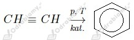
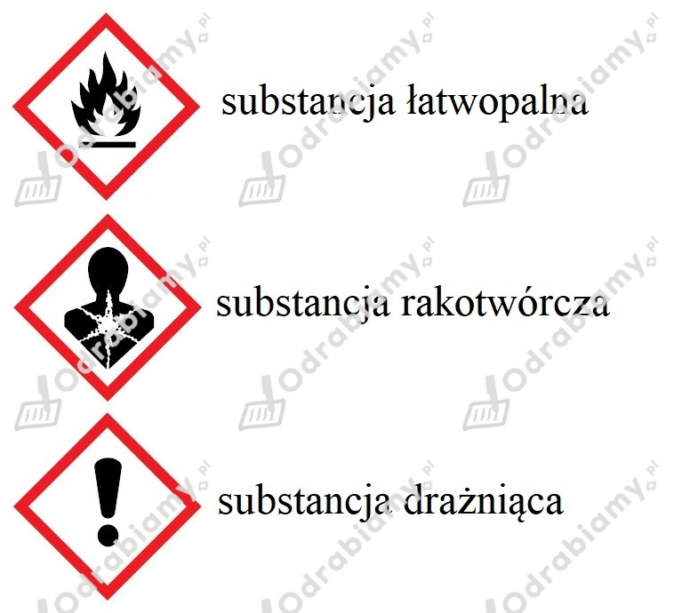

Obu tym reakcjom ulegają alkeny oraz alkiny.
Wzory węglowodorów, które należy wskazać to:
Zaczynamy od obliczenia stosunków masowych w podanych alkenach (masa atomowa węgla to 12 u zaś wodoru 1 u):
- C2H4:
- C3H6:
- C4H8:
- C5H10:
- C6H12:
W szeregu homologicznym alkenów występuje prawidłowość , że stosunek masowy węgla do wodoru w cząsteczce każdego z alkenów wynosi 6:1.
Sprawdzamy jak zmieniają się stosunki masowe pierwiastków w szeregach homologicznych alkanów i alkinów. W tym celu liczymy stosunki masowe pierwiastków dla węglowodorów zawierających po 2, 3 oraz 4 atomy węgla w cząsteczce, z każdego z szeregów:
Alkany:
- C2H6:
- C3H8:
- C4H10:
Alkeny:
- C2H2:
- C3H4:
- C4H6:
Szeregi homologiczne alkanów i alkinów nie wykazują podobnej prawidłowości jak szereg homologiczny alkenów.
a)
1.
2.
3.
b)
1.
2.
c)
1. 
1. Do zatkanych probówek zawierających badane gazy dodajemy wodę bromową. Probówka, w której nie dojdzie do odbarwienia zawiera etan .
2. Pozostałe dwa gazy poddajemy spaleniu. Eten spala się niebieskim płomieniem, zaś etyn żółtym i silnie kopcącym.
Zaczynamy od obliczenia objętości tlenu. Z równania reakcji widzimy, że stosunek molowy acetylenu do tlenu wynosi 2:5. Jeden mol tlenu w warunkach normalnych (zakładamy, że w takich zachodzi reakcja) zajmuje objętość 22,4 dm3.
Liczymy objętość powietrza:
Odpowiedź: Do całkowitego spalenia 0,25 mola acetylenu potrzeba 70 dm3 powietrza.
Liczba elektronów zdelokalizowanych: 6
Liczba wiązań typu σ: 12
Liczba wiązań typu 𝜋: 1
Wyjaśnienie:
Benzen posiada 6 elektronów zdelokalizowanych tworzących 1 wiązanie typu 𝜋 dlatego właśnie posiada aromatyczny charakter.
Benzen jest bezbarwną, palną cieczą, która ma charakterystyczny zapach. Jego gęstość jest mniejsza od gęstości wody. Benzen rozpuszcza się w rozpuszczalnikach organicznych. Jest substancją toksyczną i rakotwórczą.
a) metylobenzen
b) 1,4-dimetylobenzen
c) benzen
d) 1,2-dimetylobenzen
e) 1,3-dimetylobenzen
f) etylobenzen
Homologi:
Związki a, b, d, e oraz f są homologami związku c.
Izomery:
Izomerami względem siebie są związki b, d, e oraz f.
Podpisane oznaczenia:
